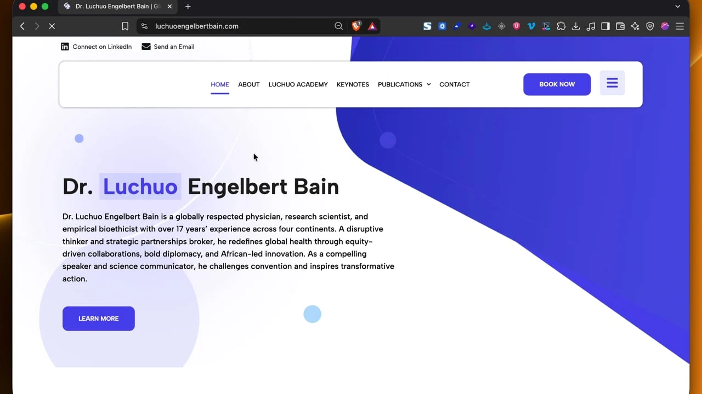
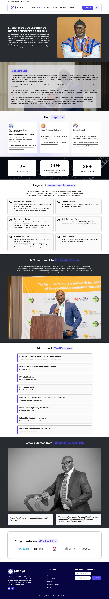
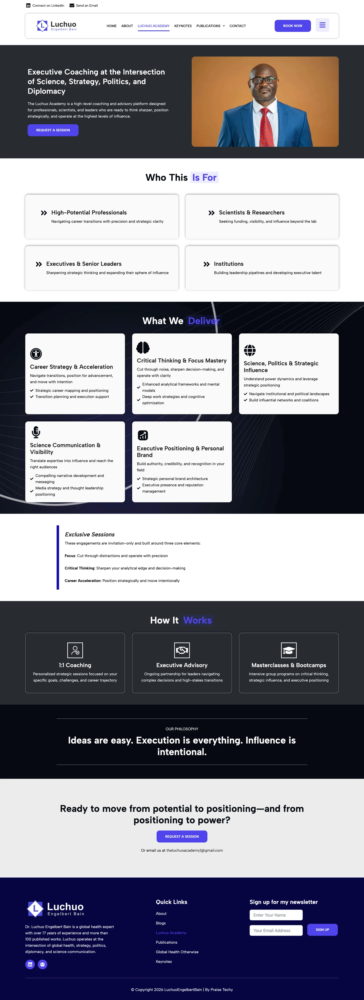

Dr. Luchuo Engelbert Bain

How I built a distinguished personal brand, research archive, and executive consulting platform for international public health leader Dr. Luchuo Engelbert Bain
See live site ↗ See live site ↗Authoritative Global Presence for an International Scholar
Dr. Luchuo Engelbert Bain is a renowned physician-researcher, bioethicist, and global public health expert with over a decade of leadership across Africa, Europe, and international health agencies.
The goal was to create a distinguished, authoritative digital hub that seamlessly brings together his 150+ peer-reviewed publications, global keynote speaking portfolio, executive consulting services, and research training academy into a cohesive, high-converting personal brand.
I designed and engineered a sophisticated, scholarly website architecture tailored for high-impact international engagement, research discovery, and executive consultations.
Created an elegant, scholarly brand aesthetic blending refined typography with modern interactive cards and clear visual hierarchy.
Structured a comprehensive research archive organizing peer-reviewed journal papers, editorial appointments, and public health books.
Engineered direct booking and speaking engagement inquiry funnels for international conferences, universities, and health bodies.
Implemented schema markup, SEO optimizations, and lightning-fast asset delivery to ensure top global visibility across academic and medical queries.

Engineering Process
A rigorous, evidence-driven approach to architecture, scholarly content structuring, and conversion design.
Discovery & Taxonomy
Cataloged extensive academic credentials, editorial roles, and research projects to design an intuitive taxonomy that serves both academic peers and institutional partners.
Editorial & UI Architecture
Crafted high-legibility typographic pairings, dedicated publication filters, and executive biography sections highlighting international leadership.
Development & Optimization
Engineered custom WordPress templates with automated inquiry routing, academic citation formatting, responsive media, and 98+ Core Web Vitals speed.


Explore more case studies.
Explore full architecture breakdowns, metrics, and before/after performance results.